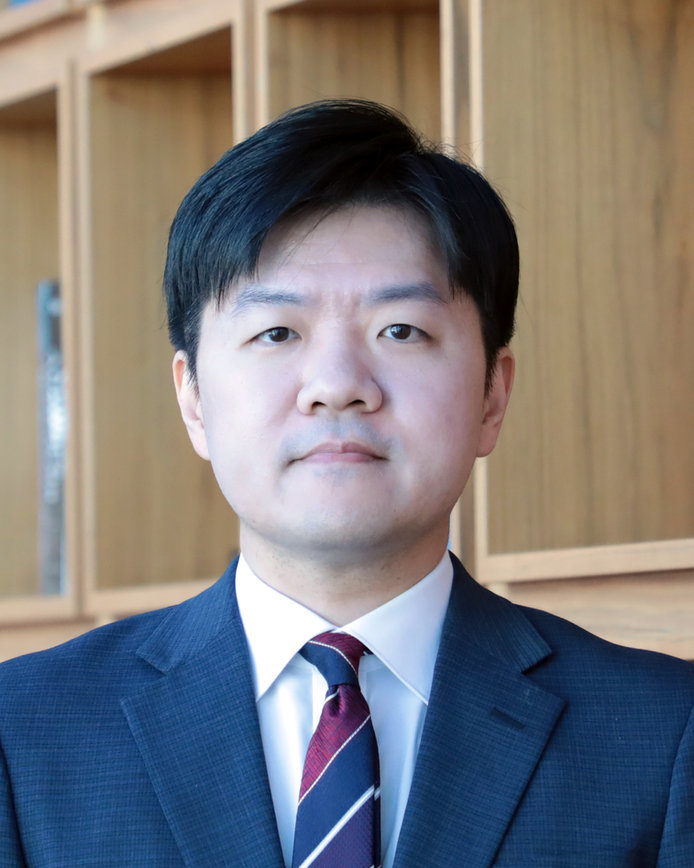

골지체는 질병의 결과가 아니라
질병의 원인입니다.
The Golgi is not a consequence
of disease. It is a cause.
우리는 골지체의 형태 변화 — 위암에서의 응축(condensation)과 알츠하이머 치매에서의 파편화(fragmentation) — 가 세포 내 신호전달을 직접 재편하여 질병을 일으킨다는 가설을 검증합니다. 세포주, 오가노이드, 유전자 조작 마우스, 인체 조직을 아우르는 실험으로 새로운 치료 표적을 발굴합니다.
We test a single idea across two diseases: that a change in Golgi architecture — condensation in gastric cancer, fragmentation in Alzheimer's disease — rewires intracellular signaling and drives pathogenesis. Our work spans cell lines, organoids, knockout mice and human tissue, and ends in druggable targets.
하나의 소기관, 두 개의 질환
One organelle, two diseases
Gastric Cancer
1,600여 개 골지 유전체의 TCGA 분석과 오가노이드·마우스 모델을 통해, 골지체의 응축이 YAP1을 활성화하여 위암 진행을 촉진함을 규명했습니다 (Cancer Research, 2025).
Large-scale TCGA analysis of ~1,600 Golgi genes plus organoid and mouse work showed that Golgi condensation activates YAP1 to drive gastric cancer progression (Cancer Research, 2025).
Read the axis → Axis 02 · FragmentationAlzheimer's Disease
아밀로이드 가설 기반 치료제의 연이은 실패 이후, 우리는 골지체 변성 자체를 발병 기전으로 제시합니다. 기억력 감퇴 표현형을 보이는 골지 관련 KO 마우스를 세계 최초로 확보하고 있습니다.
After a decade of amyloid-targeting failures, we propose Golgi degeneration itself as a pathogenic mechanism. We hold the first Golgi-related knockout mouse showing a memory-loss phenotype.
Read the axis →영상으로 보기
On video
연구실이 하는 일과, 우리가 일하는 공간입니다.
What the lab does, and where we do it.
세포소기관 이상으로 인한 질병의 발병기전 규명 및 임상적 표적 발굴
Organelle dysfunction as a mechanism of human disease — and as a drug target
인간 유전자의 3분의 1 이상이 골지체를 경유하는 단백을 암호화합니다. 그럼에도 골지체는 오랫동안 '물질을 옮기는 통로'로만 다뤄져 왔습니다. 우리 연구실은 골지체의 형태(morphology) 자체가 세포 내 신호를 결정하는 독립 변수라고 봅니다. 형태가 바뀌면 신호가 바뀌고, 신호가 바뀌면 질병이 시작됩니다.
More than a third of the human genome encodes proteins that pass through the Golgi, yet the organelle is still treated mostly as a conduit. We treat Golgi morphology as an independent variable that sets intracellular signaling: change the shape, change the signal, and disease follows.
Gastric Cancer
Alzheimer's Disease
확장 중인 주제
Adjacent programmes
위암 발생 기전 및 치료에 대한 새로운 표적 발굴
New mechanisms and new targets in gastric cancer
Cis · 문제 설정유전체 중심 접근의 한계Where cancer genomics stops
지난 20년간 암 생물학은 종양유전자와 종양억제유전자의 돌연변이 탐색을 중심으로 발전했습니다. NGS의 비약적 발전으로 수많은 돌연변이가 규명되었지만, 암 정복은 여전히 인류 보건의 최대 난제로 남아 있습니다. 이는 특정 유전자의 돌연변이 연구만으로는 암의 발생·진행·전이를 설명하는 데 한계가 있음을 뜻하며, 그 결과 암 단백유전체학, 암 대사체학, 암 면역학이 새롭게 주목받고 있습니다.
Two decades of cancer biology have been organised around mutations in oncogenes and tumour suppressors. Next-generation sequencing delivered those mutations at scale — and yet cancer remains unsolved. That gap is the argument for looking beyond genomics, and it is why proteogenomics, metabolomics and immunology have moved to the centre.
Medial · 가설세포 소기관을 항암 표적으로The organelle as a third level of drug targeting
골지체는 단백과 지질의 성숙·수송을 담당하는 소기관으로 알려져 왔지만, 최근 연구는 골지체가 종양의 발생과 진행에 직접 관여함을 보여줍니다. 대표적 종양 단백인 RAS는 일부 신호전달을 골지체에서 수행하며(Nat Cell Biol, 2002), GOLM1·GOLPH2·GOLPH3 등 골지 구성 단백은 전립선암·췌관 선암종·간세포암종을 촉진합니다. 그럼에도 암 생물학에서 소기관 연구는 여전히 극히 부족합니다.
The Golgi has long been filed under trafficking. But RAS runs part of its oncogenic signalling from the Golgi (Nat Cell Biol, 2002), and Golgi resident proteins such as GOLM1, GOLPH2 and GOLPH3 promote prostate, pancreatic and hepatocellular cancers. Organelle-level cancer biology remains strikingly underexplored.
Trans · 결과응축된 골지체가 YAP1을 활성화시킨다A condensed Golgi switches YAP1 on
우리는 1,600여 개 골지 유전체에 대한 대규모 TCGA 분석, 세포주·마우스·오가노이드 모델 실험을 통해 골지체의 응축이 YAP1을 활성화하여 위암 진행을 촉진함을 밝혔습니다 (Cancer Research, 2025). 현재 위암 표적치료제 중 Trastuzumab을 제외한 대부분의 후보 약물이 무진행 생존기간을 유의미하게 개선하지 못한 상황에서, 골지체 조절은 기존 수용체·kinase 억제 전략과 병렬적인 새로운 치료 경로를 제안합니다.
Combining TCGA analysis of ~1,600 Golgi genes with cell line, mouse and organoid models, we showed that condensation of the Golgi activates YAP1 and promotes gastric cancer progression (Cancer Research, 2025). Against a therapeutic landscape where almost every targeted agent except trastuzumab has failed to move progression-free survival, Golgi modulation offers a route that runs parallel to receptor and kinase inhibition rather than competing with it.
Assets연구실의 강점What we bring
연구책임자는 GRASP55를 포함한 골지 단백의 분자·생리 기능을 다년간 연구해 왔으며, 그 성과로 Nature Communications (2020)에 Grasp55 KO 마우스의 지방 흡수 장애 및 고지방식 유도 비만 저항성을 보고했습니다. 한국과학기술연구원, 병리학교실, 생물정보학교실과의 협업을 통해 주제를 확장하고 있습니다.
The PI has worked on GRASP55 and related Golgi proteins for over a decade, including the Nature Communications (2020) report that Grasp55-deficient mice show impaired fat absorption and resistance to diet-induced obesity. The programme runs with pathology, bioinformatics and KIST collaborators.
알츠하이머 치매의 새로운 발병기전 규명 및 임상적 표적 발굴
Rewriting the pathogenesis of Alzheimer's disease
Cis · 규모치매의 부담The scale of the problem
전 세계 치매 환자는 2030년 약 7,600만 명, 2050년 약 1억 3,500만 명에 이를 것으로 전망됩니다. 국내 치매환자는 2039년 200만 명, 2050년 300만 명을 넘어설 것으로 추정되며, 국가치매관리비용은 2050년 100조 원을 상회할 것으로 예상됩니다. 한국은 OECD 국가 중 고령화 속도가 가장 빠릅니다.
Global dementia prevalence is projected to reach roughly 76 million by 2030 and 135 million by 2050. Korea, which is ageing faster than any other OECD country, expects more than 3 million patients and over KRW 100 trillion in annual care costs by 2050.
Medial · 한계아밀로이드 가설 이후After the amyloid cascade
수정된 아밀로이드 가설에 근거한 β-분비효소 억제제(베루베세스타트, 라나베세스타트, 아타베세스타트), γ-분비효소 억제제(아바가세스타트, 세마가세스타트), 아밀로이드 표적 면역치료제(바피뉴쥬맙, 솔라네주맙, 크레네주맙, 간테네루맙)가 임상에서 연이어 실패했습니다. 이는 발병 기전에 대한 이해가 아직 충분하지 않음을 뜻합니다.
β-secretase inhibitors, γ-secretase inhibitors and amyloid-directed immunotherapies have failed in sequence despite enormous investment. The most parsimonious reading is that we do not yet understand the mechanism.
Trans · 제안골지체 이상을 발병기전으로Golgi degeneration as pathogenesis
알츠하이머, 파킨슨, 헌팅턴, 근위축성 측삭경화증에서 골지체의 형태 이상은 30년 가까이 반복 관찰되어 왔습니다. 신경세포는 축삭과 수상돌기 말단까지 장거리 수송을 수행해야 하며, 이를 위해 '골지전초(Golgi outpost)'라는 별도의 구조까지 갖추고 있습니다. 물질 수송이 가장 정교해야 하는 세포에서 수송의 중심 기관이 무너진다면, 그것이 결과가 아니라 원인일 가능성을 검증해야 합니다.
Golgi morphological abnormality has been reported in Alzheimer's, Parkinson's, Huntington's and ALS for nearly thirty years — and consistently filed as a downstream marker. Neurons depend on the longest and most precise trafficking in the body, and even maintain dedicated Golgi outposts in dendrites. If the trafficking hub collapses in the cell type most dependent on trafficking, causality deserves a test.
우리는 세 가지 구체적 가설로 <골지체 기반 치매 기전 연구>를 수행합니다: ① 골지체 변성에 의한 독성 단백의 생성, ② 골지체 의존적 단백 분해 경로의 이상, ③ 골지전초 변성에 의한 세포골격 조절 이상.
Three testable hypotheses drive the programme: (i) generation of toxic proteins downstream of Golgi degeneration; (ii) failure of Golgi-dependent protein degradation; (iii) cytoskeletal dysregulation caused by Golgi outpost degeneration.
Assets차별성Why this lab
우리는 유전자 조작에 의해 기억력 감퇴 표현형을 보이는 골지체 관련 KO 마우스를 세계 최초로 발굴·보유하고 있으며, 이를 활용한 기전 연구를 수행 중입니다. 낭포성 섬유증, 선천성 난청, 위장관기질종양, 비만·대사질환에서 골지체 조절인자를 발굴한 이력이 이 연구의 기술적 기반입니다.
We hold the first Golgi-related knockout mouse with a genetically driven memory-loss phenotype, and are running mechanism studies on it. The technical base comes from a decade of identifying Golgi regulators in cystic fibrosis, congenital hearing loss, GIST, obesity and metabolic disease.
Jiyoon Kim, M.D., Ph.D. · 김지윤
부교수, 가톨릭대학교 의과대학 약리학교실
Associate Professor, Department of Pharmacology, The Catholic University of Korea College of Medicine

"Discovery consists of seeing what everybody has seen and thinking what nobody has thought." Albert Szent-Györgyi, Nobel Laureate in Physiology or Medicine, 1937
Research interests
Education
Appointments
Honors and awards
Professional activities
구성원
Members
"Two are better than one; because they have a good reward for their labour." Ecclesiastes 4:9
Research & Postdoctoral Fellows
Graduate Students
Research Assistant
Alumni
연구 성과
Research output
"They that sow in tears shall reap in joy." Psalm 126:5
* first author · # corresponding author · Google Scholar
특허
Patents
골지체 형태를 약물로 조절한다는 아이디어를 실제 화합물로 옮긴 결과입니다.
Where the morphology hypothesis becomes chemistry.
실험기법 매뉴얼
Method manuals
연구실 소식
Lab news
"You can't connect the dots looking forward; you can only connect them looking backwards." Steve Jobs, Stanford Commencement Address, 2005
갤러리
Gallery
사진을 누르면 크게 보실 수 있습니다.
Tap any photo to enlarge.
오시는 길 & 지원
Visit & apply
- Address
- 서울특별시 서초구 반포대로 222
옴니버스파크 6130호
Omnibus Park #6130, 222 Banpo-daero, Seocho-gu, Seoul, Korea - Transit
- 지하철 3·7·9호선 고속터미널역 도보 10분
지하철 2호선 서초역 셔틀버스 5분 - Office
- +82-2-3147-8358
- Lab
- +82-2-3147-8535
- Fax
- +82-2-536-2485
- jykim@catholic.ac.kr
함께할 사람을 찾습니다
We're hiring
창의적인 의과학 연구를 함께 할 학생과 연구자를 기다립니다. 학부 인턴, 석·박사 통합과정, 박사후연구원 지원을 상시 받습니다. 문의사항과 이력서는 이메일로 보내주세요. 친절하게 답변드리겠습니다.
We take undergraduate interns, integrated MS–PhD students and postdoctoral fellows on a rolling basis. International applicants are welcome — the lab already works in English day to day. Send a CV and a short note about what you want to work on.
jykim@catholic.ac.kr →